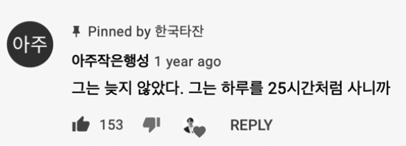

앞으로 나아가지 않으면 뒤처질 뿐!
모든 일이 다 그렇듯 3년 동안 유튜브를 운영하면서 항상 채널이 성장하는 건 아니었다. 구독자 0명으로 시작해 1,000명이 되기까지 1년, 5만 명을 달성하기까지 또 1년이 걸렸다. 이상적인 시나리오라면 그다음 1년 동안은 10만 명이 되어야겠지만 매일같이 수많은 채널이 생겨나는 유튜브 시장에서 계속해서 구독자를 끌어모으기란 말처럼 쉬운 일이 아니었다.
구독자 5만 명을 달성한 후, 내 채널은 정체기에 빠졌다. 구독자가 오르기는커녕 떨어지지 않으면 다행이었다. 졸업을 앞둔 상황에서 취업 준비까지 하다 보니 전처럼 꾸준히 영상을 제작하기도 쉽지 않았다. 자연스럽게 업로드는 뜸해졌고, 구독자 유입 그래프는 점점 삼각형 모양에 가까워졌다.
나름대로 3년간 심혈을 기울인 채널이 이렇게 도태되는 것을 가만히 지켜보고 있을 수만은 없었다. 무언가 변화의 계기가 필요했다. 어떤 영상이 운 좋게 알고리즘의 축복을 받아 많은 사람에게 노출되는 것을 바랄 수도 있었지만 언제 어떤 영상이 선택될지, 아니 뭐라도 노출이 되기는 할지 아무도 모르는 일이었다. 운에 맡기기보다는 나의 노력으로 이 상황에서 벗어나고 싶었다.
‘어떤 콘텐츠를 찍어야 할까? 어떤 도전이 이 상황의 돌파구가 될까?’
고민했지만 딱히 떠오르는 주제가 없었다. 그러다 문득 고민만 하고 있는 나를 발견했다. 한국타잔의 모토가 무엇인가. ‘Don’t think, just do’ 아닌가! 고민은 고민만 낳을 뿐, 이럴 시간에 뭐라도 찍어 올려야겠다는 생각이 들었다.
‘그냥 뭐가 되었든 일단 하자.’
‘일단 영상을 만들자. 일단 영상을 많이 만들자.’
‘그래, 한 달 동안 영상을 매일 만들어보자!’
그리하여 나의 ‘1일 1영상’ 프로젝트가 시작되었다.
✔ 목표: 한 달 동안 매일 유튜브에 영상을 업로드한다.

하루를 25시간처럼 쓰는 사람
최근 업로드가 뜸했으므로 프로젝트를 알릴 겸 어그로도 끌 겸 ‘드릴 말씀이 있습니다’라는 제목으로 공지 영상을 올렸다. 발랄한 비트에 맞춰 한 달 동안 매일 하나씩 영상을 만들어 올리겠다는 랩인 듯 랩 아닌 공지사항을 전달하자 구독자들은 기다렸다는 듯 나를 반겨주었다(그렇게 이 영상은 내가 좋아하는 영상 중 하나가 되었다).
그렇게 호기롭게 1일 1영상을 선언했는데, 문제는 그다음이었다. 도대체 무슨 수로 매일 영상을 하나씩 찍어 올린단 말인가. 마지막 학기라 시간 여유는 있었지만 영상 하나를 만들 때 보통 4~5일은 족히 걸렸으므로 제대로 계획하지 않으면 실패는 불을 보듯 뻔했다. 게다가 첫 영상 업로드 이후로 매일 아침은 아이디어와의 전쟁이었다. 적어도 오전에는 기획이 끝나야 오후에 촬영하고 편집해서 저녁에 업로드할 수 있었다.
콘텐츠 30개를 미리 기획해놓고 시작한 프로젝트가 아니었기 때문에 주제는 의식의 흐름을 따르기로 했다. 가령 이런 식이었다.
‘나 지금 1일 1영상 시작한 걸 후회하나……? 후회? 그래 후회에 대한 콘텐츠를 찍어보자!’
그렇게 만들어진 두 번째 영상이 ‘1일 1후회 시작……?’이다.
처음에는 이렇게 해도 되는 건가 싶었지만 막연한 주제였던 것 치고 나름대로 기승전결이 있는 콘텐츠가 나왔다.
‘키워드만 생각해내면 무엇이든 찍을 수 있겠구나!’
이때부터 내가 풀어낼 수 있는 키워드를 고민했다. 매일 업로드하는 걸 구독자들이 알고, 하루 만에 초고퀄리티의 영상이 만들어질 수 없다는 것도 누구나 알기 때문에 부담감을 내려놓고 원래 취지였던 ‘일단 만들고 보자’를 실천하기로 했다. 그러자 다양한 키워드들이 떠올랐다. 유튜버라면 한 번쯤은 해보는 ‘MBTI’, 평소 많은 질문을 받은 ‘시간 관리법’, 취업을 위해 준비 중이었던 ‘OPIc’, 기생충에 나와 다시 이슈가 되었던 ‘짜파구리’ 등 가볍고 흥미로운 주제가 많았다.
그렇게 아이디어를 조금씩 쌓아두고 매일 아침 마음에 드는 걸 하나씩 골라 무턱대고 찍었다. 어떻게 찍을지는 깊게 고민하지 않았다. 일단 카메라부터 켜고 느낌 가는 대로 촬영했다. 막상 해보니 하루 만에 영상을 만들어 올리는 게 가능했다.
그때부터 요령이 생겼다. 예전에는 대본을 쓰고 소스를 충분히 확보한 다음 고르고 골라 10분 내외의 영상을 만들었다면 이제는 키워드만으로 전체적인 구상과 영상 길이까지 그려져 최소한의 시간만 필요했다. 영상을 하루 만에 완성해야 한다는 생각에 집중력도 높아졌고 늘 쓰던 편집 툴임에도 매일 쓰다 보니 작업 속도가 점점 빨라졌다. 정말 아무 소재도 떠오르지 않는 날에는 내내 고민만 하다가 결국 ‘함께 책 읽어요’라는 제목을 달고 한 시간짜리 라이브로 영상을 대체하기도 했고 ‘실패 콘텐츠 방출’이라는 이름으로 예전에 실패했던 다리 찢기 영상을 가져와 편집해 올리기도 했다.
1일 1영상 챌린지가 끝나기 하루 전에는 ‘1일 1영상이 만들어지는 과정’이라는 짧지만 강력한 영상을 제작했다. 영화 기생충의 OST인 ‘짜파구리’에 맞추어 아침에 일어나 저녁에 업로드가 완료되는 과정을 임팩트 있게 담았는데, 영상을 함축적으로 담아내려니 긴 영상보다 오히려 더 어려워 시간이 오래 걸렸다. 결국 밤 12시를 넘기고 다음 날 새벽 1시가 다 되어서야 업로드했다. 제시간에 올리지 못한 걸 아쉬워하고 있는데 한 구독자분께서 아쉬움을 싹 날려주는 정말 잊지 못할 명댓글을 남겨주셨다.

그렇게 개인적인 사정으로 빠진 3일을 제외하고 총 27개의 영상을 제작했다.
- 드릴 말씀이 있습니다.
- 1일 1후회 시작…?
- 시간관리, 이거 한 번 써보세요
- MBTI검사
- 다섯가지 모닝 루틴
- 함께 책 읽어요
- 타잔바디프로젝트
- [절친토크] 한국타잔의 실체를 밝혀드립니다
- 하루 브이로그
- 미니멀리즘 5개월 후기
- [실패 콘텐츠 방출] 다리 찢기
- 구독자님 100분께 보내는 브이로그
- 서울 가는 길
- 이틀 동안 영어만 쓰기
- 부채살 짜파구리 ASMR
- 내가… 노란딱지라니…
- My lazy Weekend
- 오픽 성적 언박싱
- 3주 동안 1일 1영상을 하면서 느낀 점
- 마약 토스트 먹방
- 여러분은 행복하신가요?
- 한 달 동안 1일 1 클래식
- 왓츠인마이백
- 스포츠 서울 인터뷰
- 금연 6개월 차
- 1일 1영상이 만들어지는 과정
- 한 달 동안 1일 1영상 해보았습니다

한계를 뛰어넘게 하는 몰입의 힘
유튜버로서, 그리고 도전하는 사람으로서 이번 도전은 무엇보다 더 큰 성취감이 몰려왔다. 완전히 새로운 목표를 세우고 한 달 내내 매달려 성과를 낸 건 이번이 처음이었다. 1분 1초를 쪼개가며 어떤 영상을 만들지 고민하고 제작하다 보니 나의 모든 정신이 유튜브에만 집중되었다. 그 와중에 마지막 학기를 보내며 자격증 시험도 준비하는 등 예상과 달리 나에게 주어진 일들을 막힘 없이 잘 해냈다. ‘몰입의 힘’은 정말 대단하다는 것을 느꼈다.
도전 전후로 구독자 수는 거의 달라지지 않았다. 처음 목표로 세운 구독자 정체기를 뚫어내진 못한 것이다. 그래도 괜찮았다. 나는 이번 도전으로 훨씬 많은 것을 얻었다. 스스로에게 한 가지에 빠져들 듯 몰입하는 집중력을 발견했고, 영상 제작 스킬도 한 단계 업그레이드되었다. 하루에 하나씩 영상을 만들면서 훨씬 높은 퀄리티의 영상을 만들어낼 수 있다는 자신감도 생겼다.
살다 보면 슬럼프에 빠질 때가 얼마나 많을까. 나는 이번 도전이 유튜브가 아닌 다른 일에서도 위기를 헤쳐나가는 지혜를 알려줬다고 생각한다. 내게 만약 다른 정체기가 찾아온다면 딱 한 달 정도 그 문제 해결에만 매달리는 시간을 가져보려 한다. 눈에 보이지 않을지언정 그 한 달은 자양분이 되어 언젠가 크고 아름다운 성공이라는 열매를 가져다줄 것이다.
물론 1일 1영상은 두 번 하라면 못 하겠지만 말이다.